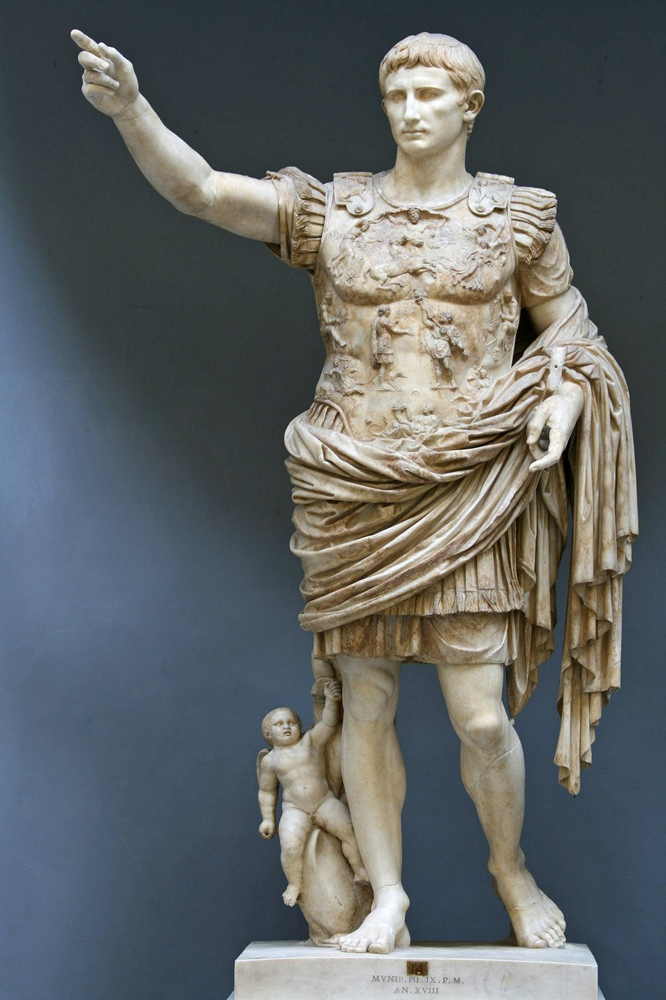
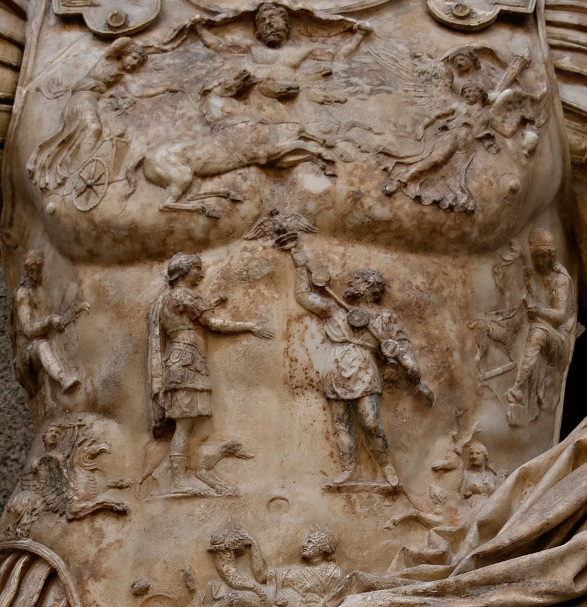

Artist unknown · circa 15 B.C.E. · Vatican Museums, Rome
Look closely at the ruler’s message
Magnifier

The Augustus of Primaporta, Roman marble, about 15 B.C.E. Carved for the private villa of Augustus’s wife Livia at Prima Porta, outside Rome. About 6 feet 8 inches tall. Vatican Museums.
Detail · the cuirass

The cuirass in close-up. At the center, a Parthian hands a captured Roman military standard back to a Roman officer, a reference to Augustus’s diplomatic victory of 20 B.C.E. Sky, sun, and dawn gods frame the event, while personifications of conquered provinces mourn below.
Augustus was Rome’s first emperor. He ruled from 27 B.C.E. until his death in 14 C.E., and in those four decades he remade Roman art. This statue is his most famous surviving portrait and the clearest demonstration of his new imperial style.
Nothing here comes from Roman verism. Augustus’s face is not the face of a forty-year-old emperor. It is an eternally young, Greek-god-like idealized ruler. His pose comes from the Greek contrapposto Polykleitos invented on the Doryphoros four centuries earlier. The cuirass turns a historical event into cosmic allegory, while the Cupid on a dolphin claims Augustus descended from Venus through the Trojan hero Aeneas.
The statue was carved for the private villa of Augustus’s wife Livia. It is a visual argument: the emperor stands at the center of a cosmos ordered by the gods, descended from Venus, eternally young, and posed like a Greek hero. Later European rulers borrowed from this image again and again.
Words to know
Idealization
The practice of carving a sitter’s face not as it actually looks but as a perfected version of itself: younger, more symmetrical, and more divine. Augustus adopted it from Greek sculpture as official imperial style. Across his forty-year reign, his portraits never let him age.
Cuirass
A molded torso-shaped breastplate, originally part of a Roman general’s armor. Imperial statues often show an emperor in a cuirass to signal military command, and its molded chest offered a perfect field for carved propaganda.
Allegory
Using figures and scenes to stand for ideas. On this cuirass, gods of sky, sun, and dawn frame a specific historical event, making the event read as if it were ordered by the cosmos itself.
What to notice
The pose is pure contrapposto, borrowed from the Greeks: weight on the straight right leg and the left leg bent and relaxed. Augustus’s body closely copies the Doryphoros from CL-03.
The face is idealized: young, symmetrical, and unlined. Augustus was actually in his forties when this statue was carved. He looks nothing like the older Roman patricians of verism in CL-08.
The raised right arm is the gesture of adlocutio, a general addressing his troops. Later European ruler portraits, including early American ones, repeat it.
The small Cupid riding a dolphin makes a divine claim. Cupid was Venus’s son, and Augustus’s family, the Julii, claimed descent from Venus through Aeneas.
The cuirass carries a program of carved relief. A historical event, recovering Roman standards from the Parthians, is framed by gods and personifications so a diplomatic agreement reads as cosmic destiny.
Why this matters later
Augustus’s choices become a template for Western ruler portraits for the next two thousand years. In the Early Medieval deck, you will meet the Portraits of the Four Tetrarchs, where emperors still borrow from the Augustan model even as their style changes. In the Renaissance deck, portraits of popes and princes use Augustan poses and symbolic programs. Later rulers, from Louis XIV to George Washington, repeat the raised-arm gesture, often in classical dress.
Image credits. Augustus of Primaporta, marble, circa 15 B.C.E., Vatican Museums, Rome; main and cuirass detail images from the linked source card’s Wikimedia Commons credits.